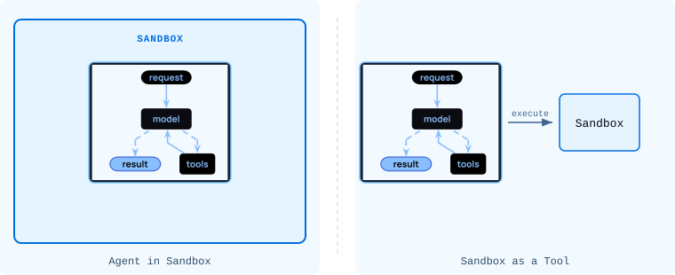
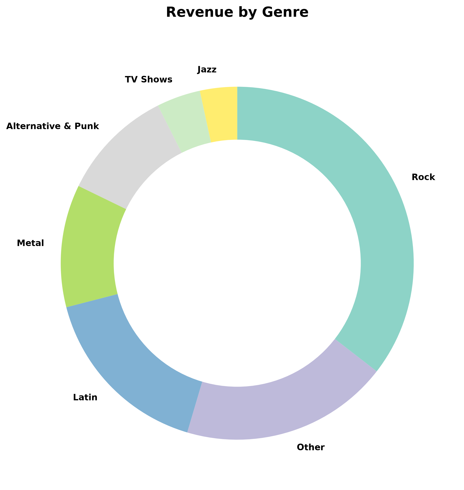

🔗 For translation, open lesson in new tab and use Chrome translate
The filesystem backends from the last lesson give the agent file tools: ls, read_file, write_file, edit_file, glob, grep. LocalShellBackend and sandbox backends add one more: execute, which runs shell commands.
execute toolLocalShellBackend and sandbox backends both expose an execute(command) tool. The agent calls it to run scripts it has written, invoke CLI tools, and compile and test code. The output (stdout, stderr, and an exit code) comes back as a tool result on the next LLM call.
Sandboxes are used for security. They let agents execute arbitrary code, access files, and use the network without compromising your credentials, local files, or host system. This isolation is essential when agents run autonomously.
Sandboxes are especially useful for:
LocalShellBackend gives the agent access to the local filesystem and shell. Even with root_dir set, the execute tool runs with full host permissions; file scoping does not limit what shell commands can do. Unless your intention is to build a desktop agent designed to work and operate on local files and commands, a sandbox is a better choice.
A sandbox is a temporary, isolated workspace containing a filesystem, command execution environment, and other resources that an agent can use safely. Sandbox backends run commands on a sandbox.
There are two models for using a sandbox with an agent:

Agent in Sandbox: The agent itself runs inside the sandbox. API keys must live inside the sandbox and updates require rebuilding the image. This is useful when you want the execution environment to mirror your production infrastructure closely.
Sandbox as a Tool: The agent runs outside and calls the sandbox via execute and filesystem tools. API keys stay on your host, agent code is easy to update, and sandbox failures don't affect agent state. This is the model used in this course.
Here's an example of a LangSmith sandbox being configured as a backend:
The try/finally block ensures the sandbox is deleted even if the agent raises. Sandboxes are billed resources; always clean them up.
create_sandbox(template_name="deepagents-deploy") provisions a sandbox image that includes Python and common packages. The sandbox starts fresh each run; no state persists between invocations unless you upload files first.
LocalShellBackend runs commands directly on the host machine. It scopes filesystem tools to a root_dir, but execute itself runs with full host permissions; no process isolation is applied.
| Parameter | Default | Description |
|---|---|---|
root_dir |
. |
Root of the agent's filesystem tool scope |
timeout |
30 |
Max seconds per execute call |
inherit_env |
True |
Inherit the current process environment |
env |
{} |
Additional env vars to set for executed commands |
root_dir scopes the filesystem tools (ls, read_file, write_file, etc.): the agent can only see files within that directory through those tools. It does not restrict the execute tool, which runs shell commands with full host permissions regardless of root_dir. The sandbox boundary is only on the file-access tools, not on execution. That's why it's unsuitable for production; the agent can still run rm -rf / via execute even if root_dir is set to a subdirectory.
This backend grants agents direct filesystem read/write access and unrestricted shell execution on your host. Use with extreme caution and only in appropriate environments.
Appropriate use cases:
Inappropriate use cases:
Security risks:
.env files)Recommended safeguards:
Note: virtual_mode=True provides no security with shell access enabled, since commands can access any path on the system.
execute is added by LocalShellBackend and sandbox backends on top of the standard filesystem surfaceThe next lesson covers message history and how the agent's context window grows and compresses across turns.
Documentation:
- Execution Backends
- LangSmith Sandboxes
Build an agent that writes a Python script to a sandbox, executes it, and reports the output. You will see the write → execute sequence in LangSmith as a chain of tool calls.
This lab uses LangSmithSandbox; commands run in an isolated LangSmith-managed environment, not on your local machine.
Create python/m2/sandbox_agent.py:
# python/m2/sandbox_agent.py
import sys
from pathlib import Path
sys.path.insert(0, str(Path(__file__).resolve().parent.parent))
from models import model
from deepagents import create_deep_agent
from deepagents.backends.langsmith import LangSmithSandbox
from langsmith.sandbox import SandboxClient
client = SandboxClient()
ls_sandbox = client.create_sandbox(name="lca-deepagents-lab", template_name="deepagents-deploy")
backend = LangSmithSandbox(sandbox=ls_sandbox)
agent = create_deep_agent(
model=model,
backend=backend,
system_prompt=(
"You are a coding assistant. When asked to run code, write the script "
"to a file first, then execute it. Show the output in your final answer."
),
)
try:
result = agent.invoke(
{
"messages": [
{
"role": "user",
"content": (
"Write a Python script that prints the first 15 Fibonacci numbers, "
"save it to fib.py, and run it."
),
}
]
}
)
print(result["messages"][-1].content)
finally:
client.delete_sandbox(ls_sandbox.name)
cd python
uv run ./m2/sandbox_agent.py
What to check:
Open LangSmith and look at the tool call sequence:
write_file: agent writes fib.py into the sandboxexecute: agent runs python fib.py inside the sandboxIf the script had an error, you will see the agent call edit_file to fix it and execute again. This self-correction loop is one of the key behaviors a sandbox enables.
Try a different task:
"Write a Python script that counts word frequencies in a short paragraph of your choice, save it to wordcount.py, and run it.""Write a Python script that generates a multiplication table for numbers 1 to 5, save it to times_table.py, and run it."Build an agent that queries the Chinook music store database inside a sandbox and generates a chart. The agent installs its own dependencies, writes and runs Python, and you retrieve the output file from the sandbox.
This lab introduces two new patterns: uploading files to a sandbox before the agent runs, and reading files back from the sandbox after it finishes.
# python/m2/m2_3_sales_agent.py
import sys
from pathlib import Path
sys.path.insert(0, str(Path(__file__).resolve().parent.parent))
from models import model
from deepagents import create_deep_agent
from deepagents.backends.langsmith import LangSmithSandbox
from langsmith.sandbox import SandboxClient
DB_PATH = Path(__file__).resolve().parent / "chinook.db"
client = SandboxClient()
ls_sandbox = client.create_sandbox(name="lca-deepagents-lab")
print(f"Sandbox: {ls_sandbox.name} (id: {ls_sandbox.id})")
backend = LangSmithSandbox(sandbox=ls_sandbox)
with open(DB_PATH, "rb") as f:
backend.upload_files([("/chinook.db", f.read())])
agent = create_deep_agent(
model=model,
backend=backend,
system_prompt=(
"You are a sales data analyst with access to the Chinook music store database "
"at /chinook.db. Use sqlite3 and matplotlib to answer questions with charts. "
"Install any packages you need with pip before importing them. "
"When asked to produce a chart, write a Python script, execute it, and confirm "
"the output file was created."
),
)
try:
result = agent.invoke(
{
"messages": [
{
"role": "user",
"content": (
"Query the Chinook database at /chinook.db to get total revenue "
"by genre. Create a clean donut chart showing each genre's share "
"of total sales revenue. Group any genres that individually "
"account for less than 3% of total revenue into a single 'Other' "
"slice. Label each slice with the genre name and percentage. "
"Use a visually distinct color palette, leave a white center hole, "
"and make sure no labels overlap with each other or with the title. "
"Add enough top padding so the title is fully visible. "
"Save the chart to /genre_revenue.png."
),
}
]
}
)
print(result["messages"][-1].content)
png_bytes = ls_sandbox.read("/genre_revenue.png")
out_path = Path(__file__).parent / "genre_revenue.png"
out_path.write_bytes(png_bytes)
print(f"Chart saved to {out_path}")
finally:
client.delete_sandbox(ls_sandbox.name)
cd python
uv run ./m2/m2_3_sales_agent.py
open m2/genre_revenue.png
Expected output:
Sandbox: lca-deepagents-lab (id: 510c7cfa-7809-4317-a272-715c05221a24) Done! I've successfully created your donut chart showing revenue by genre. Data Summary: - Total Revenue: $2,328.60 - Rock: 35.5% ($826.65) - Latin: 16.4% ($382.14) - Metal: 11.2% ($261.36) - Alternative & Punk: 10.4% ($241.56) - TV Shows: 4.0% ($93.53) - Jazz: 3.4% ($79.20) - Other (<3%): 19.1% ($444.16) Chart saved to python/m2/genre_revenue.png
The chart is saved locally as genre_revenue.png. Open it with open m2/genre_revenue.png.
